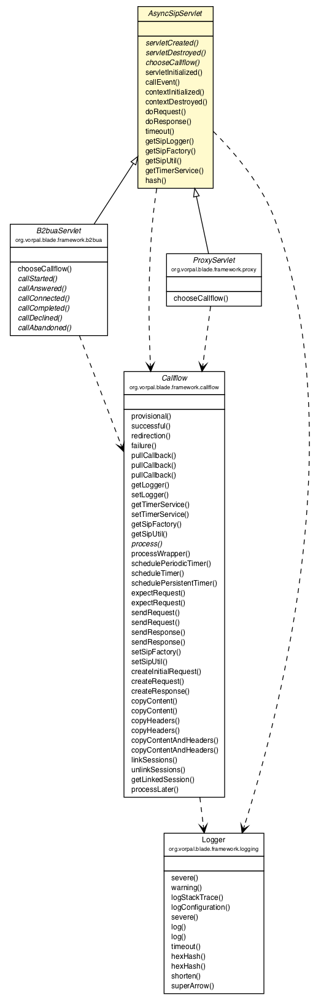

org.vorpal.blade.framework
Class AsyncSipServlet

java.lang.Object
 javax.servlet.GenericServlet
javax.servlet.sip.SipServlet
org.vorpal.blade.framework.AsyncSipServlet
javax.servlet.GenericServlet
javax.servlet.sip.SipServlet
org.vorpal.blade.framework.AsyncSipServlet
- All Implemented Interfaces:
- java.io.Serializable, java.util.EventListener, javax.servlet.Servlet, javax.servlet.ServletConfig, javax.servlet.ServletContextListener, javax.servlet.sip.SipServletListener, javax.servlet.sip.TimerListener
- Direct Known Subclasses:
- B2buaServlet, ProxyServlet
public abstract class AsyncSipServlet
- extends javax.servlet.sip.SipServlet
- implements javax.servlet.sip.SipServletListener, javax.servlet.ServletContextListener, javax.servlet.sip.TimerListener
This abstract SipServlet is designed to implement the features of the BLADE
asynchronous APIs (lambda expressions). Extend and implement this class to
create your own specialized SipServlet class. See B2buaServlet as an example.
- See Also:
- Serialized Form
|
Field Summary |
protected static javax.servlet.sip.SipFactory |
sipFactory
|
protected static Logger |
sipLogger
|
protected static javax.servlet.sip.SipSessionsUtil |
sipUtil
|
protected static javax.servlet.sip.TimerService |
timerService
|
| Fields inherited from class javax.servlet.sip.SipServlet |
DNS_RESOLVER, OUTBOUND_ADDRESSES, OUTBOUND_INTERFACES, PRACK_SUPPORTED, SIP_APPLICATIONSESSION_CREATE, SIP_APPLICATIONSESSION_ID, SIP_APPLICATIONSESSION_KEY, SIP_FACTORY, SIP_SESSIONS_UTIL, SUPPORTED, SUPPORTED_RFCs, TIMER_SERVICE |
|
Method Summary |
void |
callEvent(javax.servlet.sip.SipServletMessage message)
Override this method to handle call events that may fall outside the scope of
your defined callflows. |
protected abstract Callflow |
chooseCallflow(javax.servlet.sip.SipServletRequest request)
Implement this method to choose various Callflow objects for incoming
requests that do not already have a callflow defined. |
void |
contextDestroyed(javax.servlet.ServletContextEvent sce)
|
void |
contextInitialized(javax.servlet.ServletContextEvent sce)
|
protected void |
doRequest(javax.servlet.sip.SipServletRequest request)
|
protected void |
doResponse(javax.servlet.sip.SipServletResponse response)
|
static javax.servlet.sip.SipFactory |
getSipFactory()
|
static Logger |
getSipLogger()
|
static javax.servlet.sip.SipSessionsUtil |
getSipUtil()
|
static javax.servlet.sip.TimerService |
getTimerService()
|
static java.lang.String |
hash(java.lang.String string)
This is an alternate hashing algorithm that can be used during
the @SipApplicationKey method. |
protected abstract void |
servletCreated(javax.servlet.sip.SipServletContextEvent event)
Called when the SipServlet has been created. |
protected abstract void |
servletDestroyed(javax.servlet.sip.SipServletContextEvent event)
Called when the SipServlet has been destroyed. |
void |
servletInitialized(javax.servlet.sip.SipServletContextEvent event)
|
void |
timeout(javax.servlet.sip.ServletTimer timer)
|
| Methods inherited from class javax.servlet.sip.SipServlet |
doAck, doBranchResponse, doBye, doCancel, doErrorResponse, doInfo, doInvite, doMessage, doNotify, doOptions, doPrack, doProvisionalResponse, doPublish, doRedirectResponse, doRefer, doRegister, doSubscribe, doSuccessResponse, doUpdate, log, log, service |
| Methods inherited from class javax.servlet.GenericServlet |
destroy, getInitParameter, getInitParameterNames, getServletConfig, getServletContext, getServletInfo, getServletName, init, init |
| Methods inherited from class java.lang.Object |
clone, equals, finalize, getClass, hashCode, notify, notifyAll, toString, wait, wait, wait |
sipLogger
protected static Logger sipLogger
sipFactory
protected static javax.servlet.sip.SipFactory sipFactory
sipUtil
protected static javax.servlet.sip.SipSessionsUtil sipUtil
timerService
protected static javax.servlet.sip.TimerService timerService
AsyncSipServlet
public AsyncSipServlet()
servletCreated
protected abstract void servletCreated(javax.servlet.sip.SipServletContextEvent event)
- Called when the SipServlet has been created.
- Parameters:
event -
servletDestroyed
protected abstract void servletDestroyed(javax.servlet.sip.SipServletContextEvent event)
- Called when the SipServlet has been destroyed.
- Parameters:
event -
chooseCallflow
protected abstract Callflow chooseCallflow(javax.servlet.sip.SipServletRequest request)
throws javax.servlet.ServletException,
java.io.IOException
- Implement this method to choose various Callflow objects for incoming
requests that do not already have a callflow defined.
- Parameters:
request -
- Returns:
- Callflow the chosen callflow object
- Throws:
javax.servlet.ServletException
java.io.IOException
servletInitialized
public final void servletInitialized(javax.servlet.sip.SipServletContextEvent event)
- Specified by:
servletInitialized in interface javax.servlet.sip.SipServletListener
callEvent
public void callEvent(javax.servlet.sip.SipServletMessage message)
throws javax.servlet.ServletException,
java.io.IOException
- Override this method to handle call events that may fall outside the scope of
your defined callflows.
- Parameters:
message - a modifiable message object, either a request or response
- Throws:
javax.servlet.ServletException - an exception
java.io.IOException - an exception
contextInitialized
public final void contextInitialized(javax.servlet.ServletContextEvent sce)
- Specified by:
contextInitialized in interface javax.servlet.ServletContextListener
contextDestroyed
public final void contextDestroyed(javax.servlet.ServletContextEvent sce)
- Specified by:
contextDestroyed in interface javax.servlet.ServletContextListener
doRequest
protected final void doRequest(javax.servlet.sip.SipServletRequest request)
throws javax.servlet.ServletException,
java.io.IOException
- Overrides:
doRequest in class javax.servlet.sip.SipServlet
- Throws:
javax.servlet.ServletException
java.io.IOException
doResponse
protected final void doResponse(javax.servlet.sip.SipServletResponse response)
throws javax.servlet.ServletException,
java.io.IOException
- Overrides:
doResponse in class javax.servlet.sip.SipServlet
- Throws:
javax.servlet.ServletException
java.io.IOException
timeout
public final void timeout(javax.servlet.sip.ServletTimer timer)
- Specified by:
timeout in interface javax.servlet.sip.TimerListener
getSipLogger
public static final Logger getSipLogger()
- Returns:
- the sipLogger
getSipFactory
public static final javax.servlet.sip.SipFactory getSipFactory()
- Returns:
- the sipFactory
getSipUtil
public static final javax.servlet.sip.SipSessionsUtil getSipUtil()
- Returns:
- the sipUtil
getTimerService
public static final javax.servlet.sip.TimerService getTimerService()
- Returns:
- the timerService
hash
public static java.lang.String hash(java.lang.String string)
- This is an alternate hashing algorithm that can be used during
the @SipApplicationKey method.
- Parameters:
string -
- Returns:
- a long number written as a hexadecimal string
Copyright © 2013-2021 Vorpal Networks, LLC. All Rights Reserved.